8.Jorginho :
Joueur professionnel de football né le 20 décembre 1991 (29ans) actuellement il joue au Chelsea football club. En 2021 il a gagné la champions league et euro 2020.
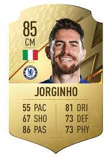
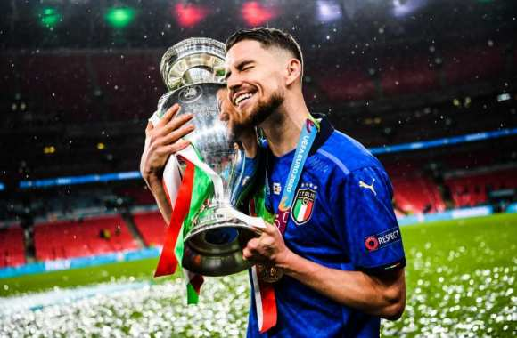
7.N’golo Kanté :
Joueur professionnel de football né le 29 mars 1991 (30ans) actuellement il joue au Chelsea football club. En 2021 il a gagné la champions league.
 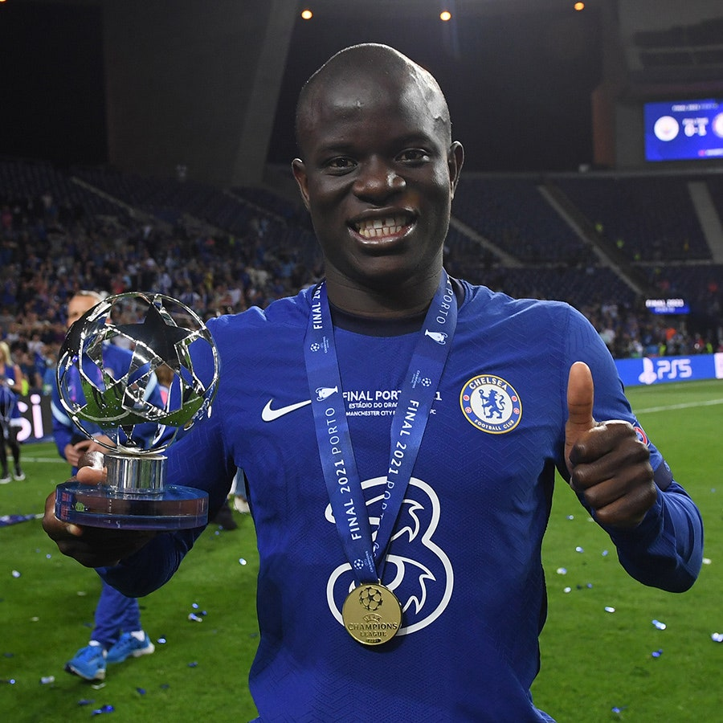
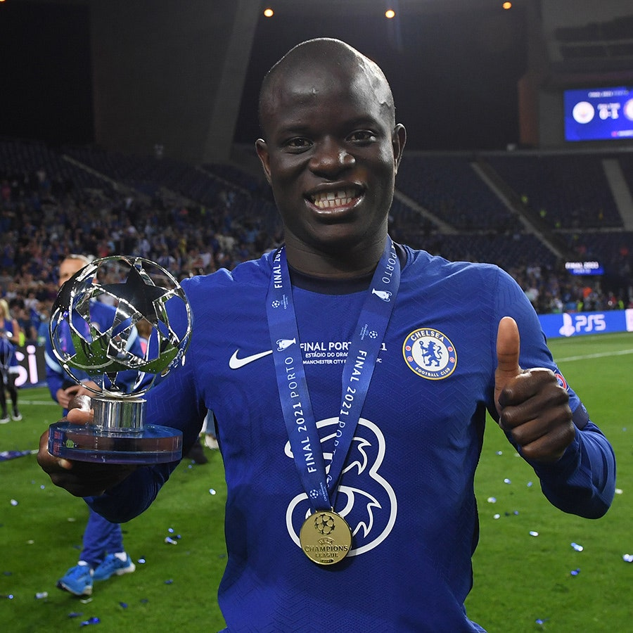
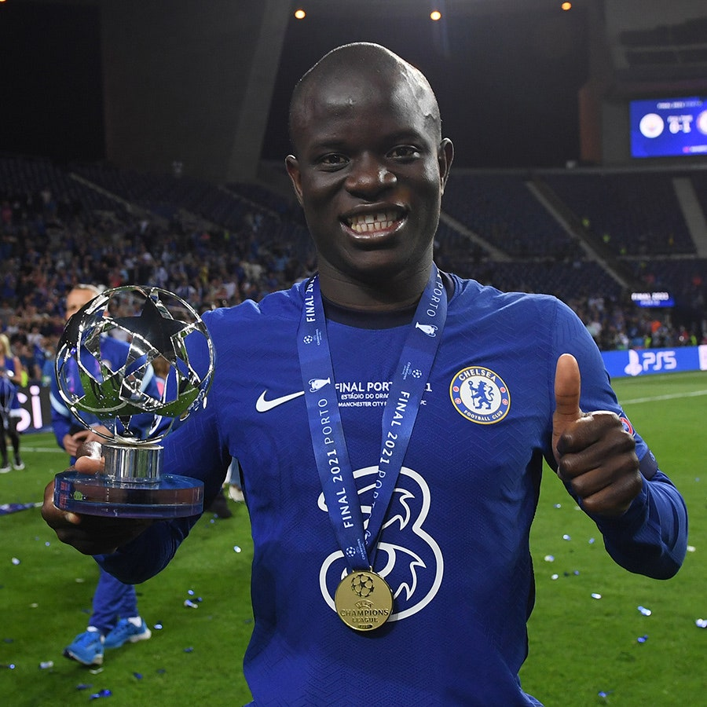
6.Erling Haaland :
Joueurs professionnel de football né le 21 juillet 2000 (21 ans) actuellement il joue au Borussia Dotmund.En 2021 il a gagné L’Audi cup et la coupe d’Allemagne.
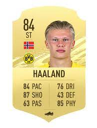
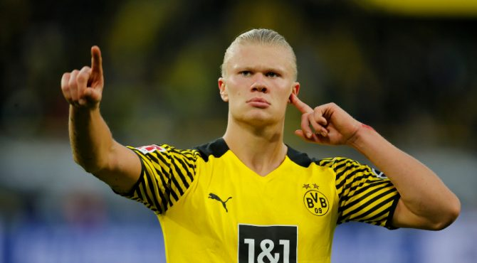
5.Kylian Mbappé :
Joueurs professionnel de football né le 20 décembre 1998 (23ans) actuellement il joue au paris saint-germain.Il a gagné la coupe de France.
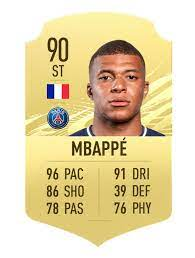
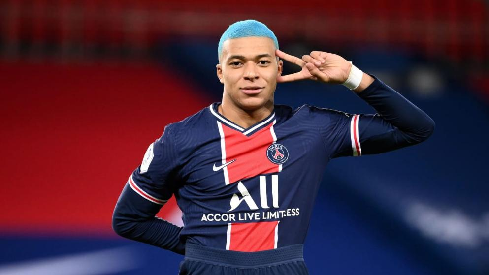
4.Lionel Messi :
Joueurs professionnel de football né le 24 juin 1987 (35 ans) actuellement il joue au paris saint-germain.Il a gagné la copa del rey.
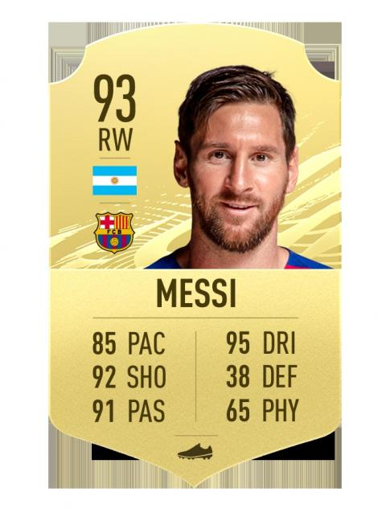
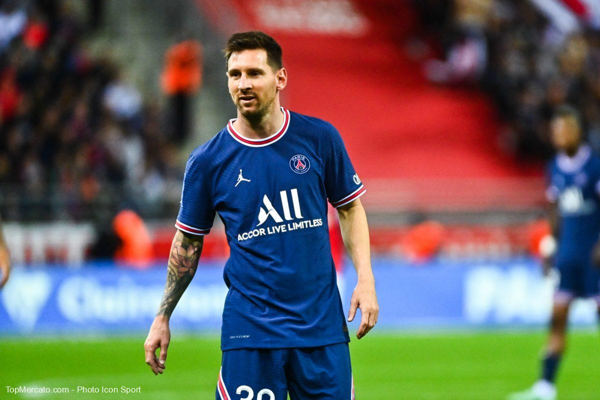
3.Karim Benzema :
Joueurs professionnel de football né le 19 décembre 1987 (34 ans) actuellement il joue au Réal de Madrid.En 2021 il a rien gagné.
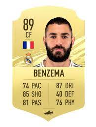

2.Robert Lewandowski :
Joueurs professionnel de football né le 21 août 1988 (33 ans) actuellement il joue au Bayern de munich. En 2021 il a gagné la coupe du monde des club,La bundesliga et la super cup d’Allemagne.
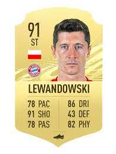
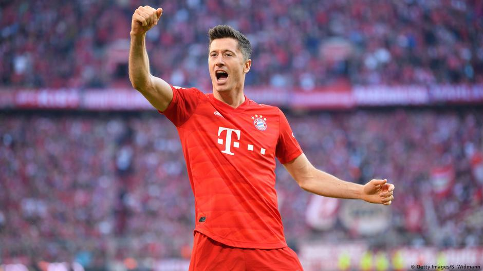
1.Cristiano Ronaldo :
Joueurs professionnel de football né le 5 février 1985 ( 37 ans) actuellement il joue a Manchester United.En 2021 il a gagné la coppa d’Italia et supercoppa d’Italia.
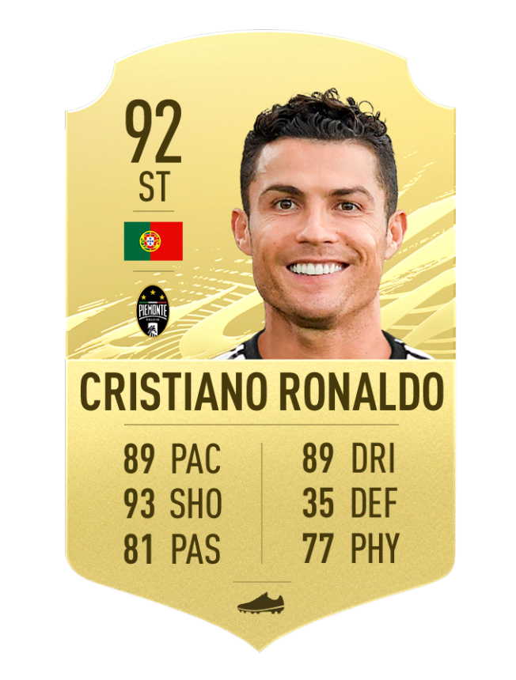
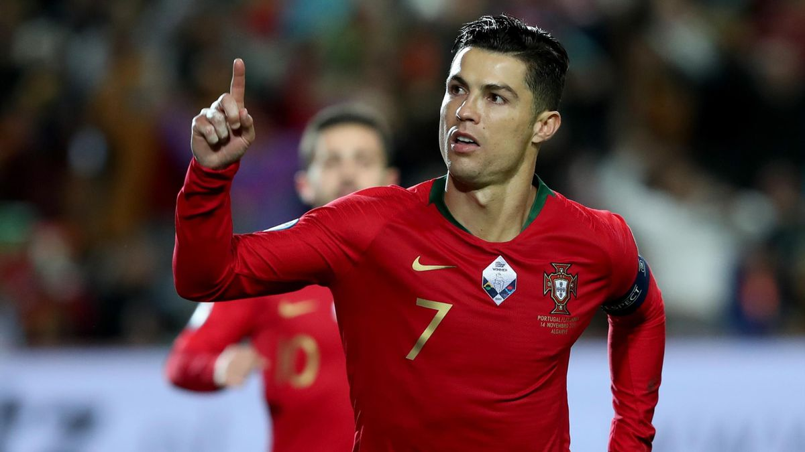